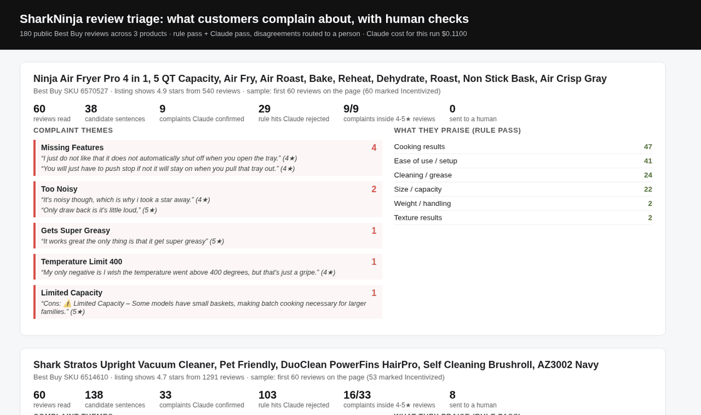

Built by Gursimar Singh, Nov 2026, on real public data

I pulled 180 public Best Buy reviews for the Ninja Air Fryer Pro, Shark Stratos upright vacuum and Ninja CREAMi Deluxe. Keyword rules flag every possible complaint, Claude decides which ones are real and groups them into themes, and anything the two disagree on goes to a person instead of the report. On this run 45 of the 62 confirmed complaints were inside 4 and 5 star reviews, like CREAMi noise and the 24 hour freeze time, which a star average hides.
What I'd improve next: add Amazon and sharkninja.com reviews and sample by star rating, since Best Buy's default pages were mostly incentivized 5 star reviews.